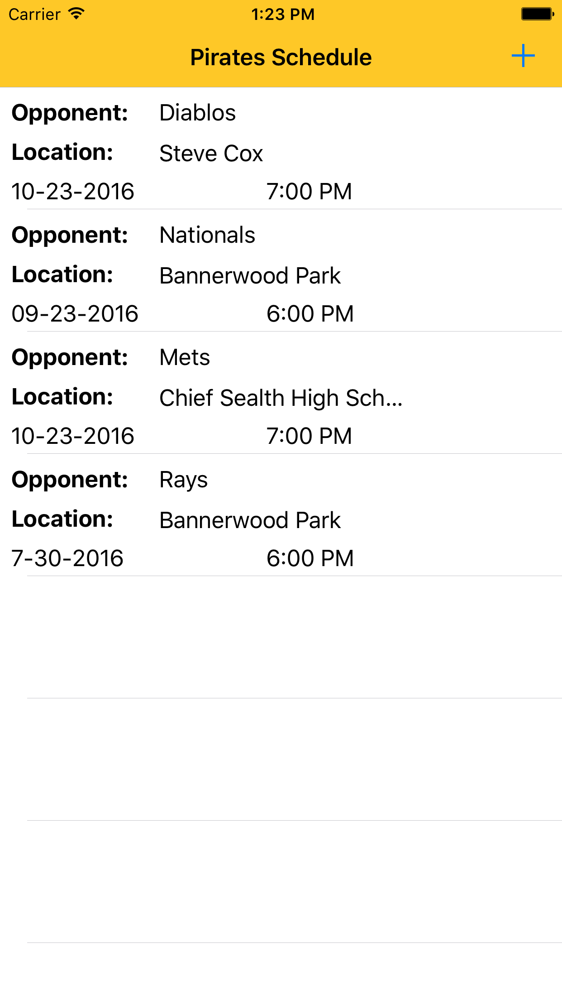
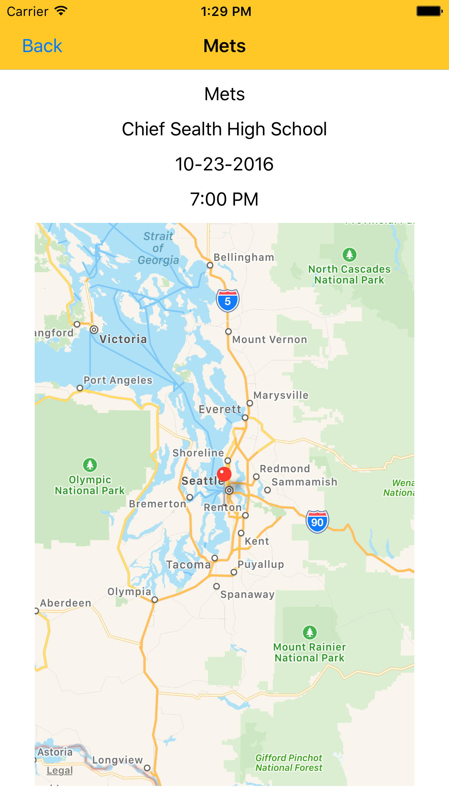
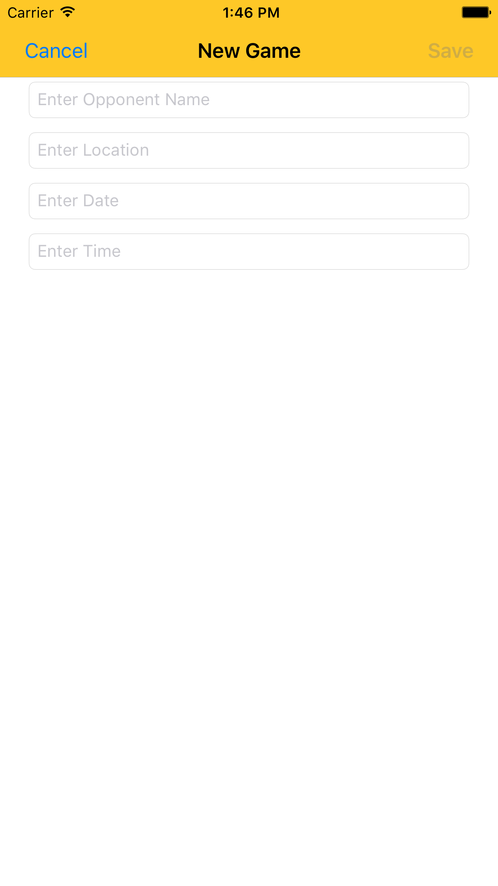

by Micheal Willard
Let’s start by looking at an overview of the application that was built using the GET and POST commands that follow. This will allow you to get a better understanding of how to implement the GET and POST calls into your own project.
This app is a simple baseball game scheduling app. A user adds a game to their schedule and can view the schedule in the table view. The user can then select a game from the table view to view the details of that game. It’s very simple and straightforward. For your application, the games can be any object. Like the Apple Developer tutorial, mentioned in the Introduction, the objects could be meals. Essentially any object you are storing in a cloud database would be able to be used in a similar manner to the game objects in this application.

Let’s take a look at the Table View. This is the main page of the App. From here you can see our objects (each game) populating their own table cell. This is a very intuitive use of the Table View Controller in iOS programming. Each object populates a a row in the table. On the top navigation bar, we see a “+” sign for adding a game to the schedule.

If we click (or touch) a game cell, we are taken to a new View Controller. This is the Game View. It simply displays the details of the Game Object and a MapKit map that has a pin dropped on the location of the game. This map uses the location entity as a string and applies a reverse-geocoding to turn the location string into coordinates, since that is what MapKit needs to display a pin.

From the Table View, if we select the “+” icon, we are taken to the Add View. If you have done some Web Development in the past, then this will be familiar to you as a web form, with text fields and the Save button acting as a submit button. The Save button also sends the POST request to the API. To keep things simple all four input fields are simple text fields and the on the API side, they are stored as strings. That is an important thing to note. There are other data types you can use with the POST methods, just be mindful when building the interface and have a strong understanding of the API’s data types the back-end.
The database object we are accessing is the game. The game entity has the following attributes:
The base URL of the API is:
https://hw3api.appspot.com/
The following example CURL call would GET a JSON that has all the games in the db currently.
curl -H "Accept: application/json" https://hw3api.appspot.com/game
[{
"not_attending": [5639445604728832],
"opp_name": "Diablos",
"attending": [5659313586569216],
"location": "Steve Cox",
"key": 5629499534213120,
"time": "7:00 PM",
"date": "10-23-2016"
},
… etc …
The following example CURL call would POST a new game into the database
curl --data-urlencode "opp_name=Rays" --data-urlencode "date=7-30-2016" --data-urlencode "time=6:00 PM" --data-urlencode "location=Bannerwood Park" -H "Accept: application/json" https://hw3api.appspot.com/game